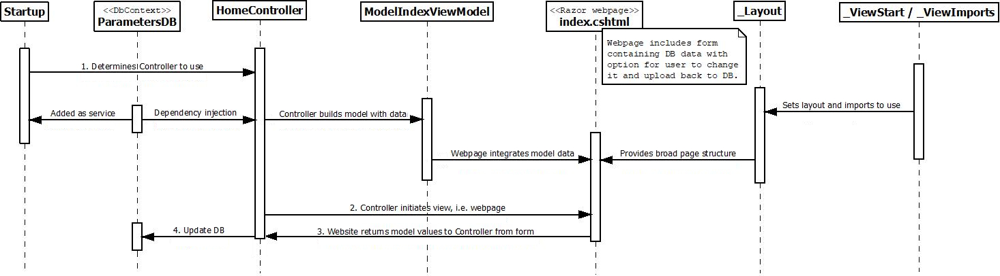

Code & UML
For the sake of demonstrating database connectivity, the parameters, which can be changed by the user, are stored in an SQLite database. The code uses scaffold Entity Framework (EF Core) classes to communicate with the database.
I haven’t implemented authentication or demanded httpd to save having to log in or add a developers’ certificate to look at the site, but this is easy enough to add.
Before using this code to run actual dye tracing experiments, please note the caveats in the comments for the file /DyeTraceCalcMvc/Calc/Calculator.cs.
MVC involves a great many files. The following sequence diagram outlines the important directly coded files and how they interact.
